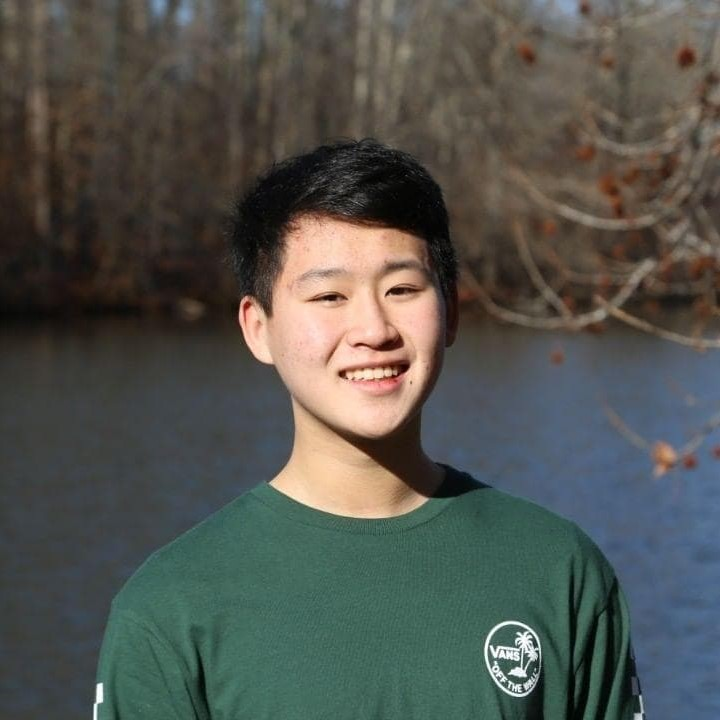
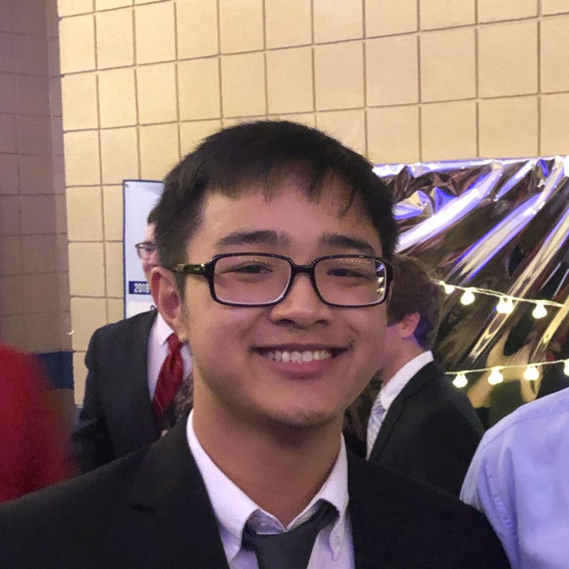
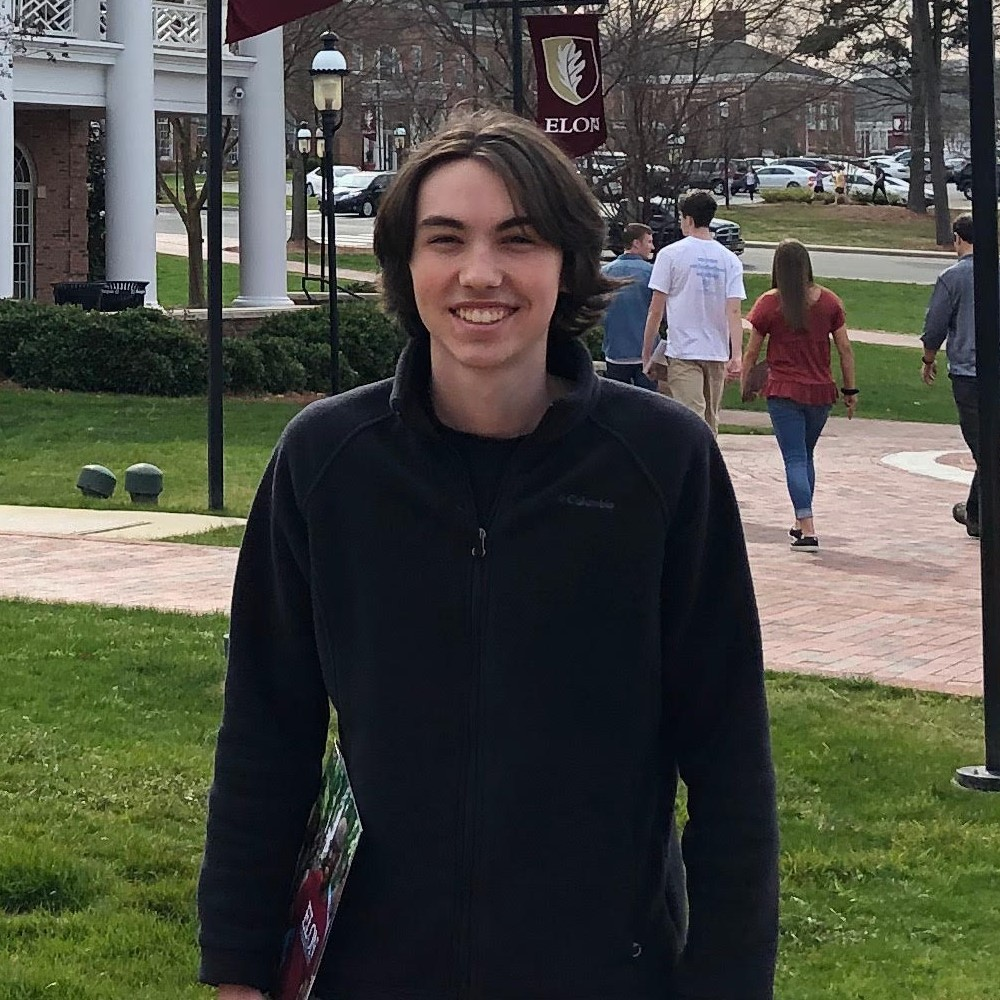

Volunteer Information
Volunteer Opportunities:
Volunteers are the most important part of NC for Better Government. As a constituent in NC, your legislators will listen to you if you make your voice heard. Volunteers for NC for Better Government advocate to their state legislators through meetings, phone calls, social media, and attending events. Volunteers also spread the cause by getting more people to call their legislators and advertising the cause through different outlets.
Benefits:
- Learn to effectively communicate the importance of ending lame-duck power grabs.
- Create long-lasting connections with state legislators.
- Learn how to influence elected officials.
- Join a community of people interested in politics and activism in North Carolina.
- Have a real positive impact on government in North Carolina.
Volunteer Responsibilities:
- Meet with your state legislator to discuss lame-duck power grabs and attend their (virtual or physical) campaign events.
- Get 20 people to call (or email) each month.
- Email and call your state legislators once each month.
Other specific things you will be doing as a volunteer include:
- Attend virtual or physical events that your state legislator holds.
- Communicate with their legislator via social media
- Communicate with community leaders to get their support of NC for Better Government
- Find other ways to market NC for Better Government, such as through traditional media or attending events.
Join Us
Thank you for your interest in volunteering with us! To continue, please fill out the form below. We will get back to you within 48 hours to schedule a phone call to talk more about your role in NC for Better Government.
Our Volunteers

Nathan Zhang
Winston-Salem, NC
Joined July 2020

Khanh Le
Raleigh, NC
Joined July 2020
Evan Deng
Greensboro, NC
Joined July 2020
Anuragh Sriram
Asheboro, NC
Joined July 2020
Hanna DeBord
Piney Creek, NC
Joined July 2020
Hamza Ishaque
Mooresville, NC
Joined July 2020

Conor Mayhorn
Mooresville, NC
Joined July 2020
Nnamdi Obi
Greenville, NC
Joined July 2020